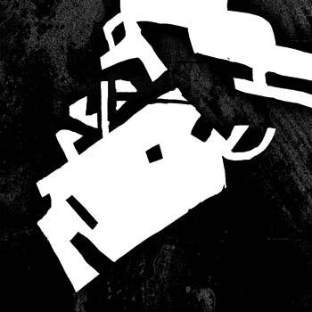

Я КОРОТКО
Персональное приглашение
Раз воспользовавшись служебным положением, не могу не воспользоваться всеми остальными.
Друзья. 24-го января в московском клубе ДОМ я, как куратор тамошних выставок, открою свою собственную. Адресована она любителям не столько иллюстрации, сколько той музыки, на которой спецализируется ДОМ (более точного ей определения не знаю).
Выставка совсем небольшая, но, так сказать, наболевшая; полторы дюжины портретов тех дорогих моему сердцу музыкантов, кого мне довелось слушать и рисовать.

Интереснее будет тому, кто знает их в лицо, но я, конечно, всем буду рад (к слову, в работе использованы, кроме моих собственных набросков, фотографии Пети Ганнушкина, чья экспозиция прошла в ДОМе в ноябре, и которому отдельное мое спасибо).
Кто-то скажет, что для выставки ни то ни се, но я как раз призываю относиться к этому формату спокойнее. Я за выставку, как разовое высказывание, а не юбилейный отчет о проделанной работе.
Формат этот, конечно, ко многому обязывает и воспринимается совершенно иначе, чем журнальная полоса или, – тем более, – лента картинок в ЖЖ, но это как раз то, чего нам не хватает, взглянуть на себя по-новому. Также не помешало бы больше относиться к себе как к творцам – при прочих равных это должно положительно сказаться не только на самоощущении, но и собственно на иллюстрации. Не говоря о том, что это еще и наилучший повод повидаться. Короче, давайте осваивать непривычный формат. Если у вас есть готовый материал, пишите. Если у вас есть голая идея, пишите. Если у вас есть одно только желание сделать выставку, напишите мне.
И еще, к вопросу о том, что лучше, пейнтер или фотошоп. Бросайте обоих, берите акрил. Такой кайф, я вам скажу.